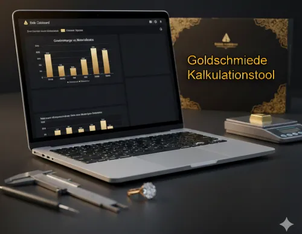

Schmuckkalkulator V2.2
Produktprofil · Marktplatz-Daten 2026-10-14 · Verkaufsseiten-Recherche 2026-10-14 · Kategorien: Software, Profession & Job, Services
- Schmuckkalkulator V2.2 ist ein/e Download in Software und Profession & Job, vertrieben über den Digistore24-Marktplatz von Anbieter Kaiwgt, gelistet seit 2026-01-15.
- Listenpreis $18.75; Digistore24 meldet — Checkout-Konversion, — Stornierungsquote und 10 % Affiliate-Provision.
- Verdienst pro Verkauf (Affiliate): $1.88 (Anbieter-seitige Statistik, keine Prognose).
Interesse an Schmuckkalkulator V2.2? Aktueller Preis, Boni und Garantiebedingungen finden Sie auf der offiziellen Seite des Anbieters:
Offizielle Verkaufsseite ansehen
Affiliate-Link (Werbung) — wir verdienen ggf. eine Provision, ohne Mehrkosten für Sie.

Marktplatz-Daten
| Produkttyp | Download |
|---|---|
| Preis | $18.75 (Single payment) |
| Affiliate-Provision | 10 % |
| Garantie/Rückgabe | Laut Verkaufsseite des Anbieters — vor dem Kauf auf der offiziellen Seite prüfen |
| Anbieter | Kaiwgt (gelistet seit 2026-01-15) |
| Marktplatz-Statistiken* | Checkout-Konversion — · Stornoquote — · Verdienst/Verkauf $1.88 |
* Anbieter-seitige Statistiken von Digistore24; sie hängen von der Traffic-Qualität ab und sind keine Prognose.
Marktplatz-Beschreibung des Anbieters
Schmucktool V2.2 ist ein Excel-basiertes VBA-Tool zur professionellen Kalkulation von Schmuckstücken für Goldschmiede und Juweliere. Es berechnet Materialkosten, Herstellkosten, Gemeinkosten und Verkaufspreise realitätsnah und nachvollziehbar. Das Tool berücksichtigt: Rohgewicht, Feingehalt und Tagesgoldpreis Verarbeitungsverluste Guss- und Edelsteinkosten Arbeitszeiten von Goldschmied und Fasser Gemeinkostenzuschläge Netto-, MwSt.- und Bruttoverkaufspreise Ein klar strukturiertes Layout , gelb markierte Eingabefelder , automatische Berechnungen und Blattschutz sorgen für einfache Bedienung und hohe Sicherheit. Ein integrierter DEMO-Modus und ein professionelles Erscheinungsbild machen das Tool ideal für Praxis, Angebotserstellung und Präsentation .
Von der Verkaufsseite des Anbieters
Seitentitel: Schmuckkalkulator V2.2 - Digistore24
Abschnitts-Überschriften
- Schmuckkalkulator V2.2
- Schmuckkalkulator V2.2
- Schmuckkalkulator V2.2
Einstiegstext
Schmucktool V2.2 ist ein Excel-basiertes VBA-Tool zur professionellen Kalkulation von Schmuckstücken für Goldschmiede und Juweliere. Es berechnet Materialkosten, Herstellkosten, Gemeinkosten und Verkaufspreise realitätsnah und nachvollziehbar.
Ein klar strukturiertes Layout , gelb markierte Eingabefelder , automatische Berechnungen und Blattschutz sorgen für einfache Bedienung und hohe Sicherheit. Ein integrierter DEMO-Modus und ein professionelles Erscheinungsbild machen das Tool ideal für Praxis, Angebotserstellung und Präsentation .
Verkäufer und Vertragspartner ist Digistore24 GmbH. Es gelten unsere Allgemeinen Geschäftsbedingungen und unsere Widerrufsbelehrung .
Preisangaben auf der Seite: $10
Recherche-Methode: rohes HTML · 391 Wörter · Qualität: medium · recherchiert am 2026-10-14. Vollständige Recherche-Datei (MD) ↗
Wie Produkte dieser Art geliefert werden
Allgemeiner Hinweis zu diesem Produkttyp (keine anbieterspezifische Anleitung): Download-Produkte werden digital geliefert: sofort nach dem Checkout erhalten Sie Downloadlinks (oder Zugang zu einem Mitgliederbereich) — kein physischer Versand. Für die genaue Anwendung von Schmuckkalkulator V2.2 sind die offizielle Verkaufsseite und die enthaltenen Materialien maßgeblich.
Gut zu wissen
- Keine Garantie-Formulierung in unserer Recherche gefunden — bestätigen Sie das Rückgabefenster auf der offiziellen Seite, bevor Sie kaufen.
- Marktplatz-Zahlen (Preis, Provision, Konversion, Stornoquote) — Quelle: offizielle Digistore24-Marktplatz-API (Affiliate-Sicht), Stand 2026-10-14. Gegenprüfung: Marktplatz-Suche nach Produkt-ID 661685.
- Verkaufsseiten-Zitate — Quelle: https://www.checkout-ds24.com/product/661685, abgerufen 2026-10-14 (Methode: rohes HTML). Verify: offizielle Seite öffnen.
- Garantie / Rückgabe — vom Anbieter festgelegt; vor dem Kauf auf der Verkaufsseite bestätigen.
- Nicht von uns geprüft: Produktqualität, Ergebnisse, Testimonials — kein Praxistest für dieses Listing durchgeführt.
Häufige Fragen zu Schmuckkalkulator V2.2
Antworten aus dem Marktplatz-Snapshot (2026-10-14) und der Verkaufsseiten-Recherche (2026-10-14); Anbieteraussagen sind inline gekennzeichnet.
Was ist Schmuckkalkulator V2.2?
Schmuckkalkulator V2.2 ist ein Angebot des Typs „Download" im Digistore24-Marktplatz, Anbieter: Kaiwgt, gelistet seit 2026-01-15. Eingepflegt unter Software und Beruf & Karriere. Digistore24 wickelt Checkout, Lieferung und Rückgaben ab.
Wie viel kostet Schmuckkalkulator V2.2?
Der Digistore24-Marktplatz listet es für $18.75 (single payment). Preise legt der Anbieter fest und können sich ändern — der Marktplatz-Eintrag oben zeigt den Schnappschuss; die offizielle Verkaufsseite zeigt den aktuellen Preis.
Gibt es eine Geld-zurück-Garantie für Schmuckkalkulator V2.2?
Unsere Verkaufsseiten-Recherche hat keine explizite Garantie-Formulierung gefunden. Viele Digistore24-Produkte bieten 60 Tage Geld-zurück, aber das legt jeder Anbieter selbst fest — bestätigen Sie es auf der offiziellen Verkaufsseite, bevor Sie kaufen.
Ist Schmuckkalkulator V2.2 seriös?
Wir bewerten keine Seriosität — wir veröffentlichen überprüfbare Zahlen: Anbieter Kaiwgt (gelistet seit 2026-01-15), Checkout-Konversion —, Stornoquote —, Affiliate-Verdienst/Verkauf $1.88 (alles Anbieter-seitige Marktplatz-Statistiken). Lesen Sie unsere 6-Punkte-Bewertungsmethode und entscheiden Sie anhand der Zahlen — oder diskutieren Sie Schmuckkalkulator V2.2 auf GitHub.
Wo kann ich Schmuckkalkulator V2.2 sicher kaufen?
Nur über die offizielle Verkaufsseite, die auf dieser Seite verlinkt ist (Checkout und Rückgaben laufen über Digistore24). Prüfen Sie dort Preis und Garantie vor der Bestellung. Der Link ist ein Affiliate-Link — der Kauf unterstützt diese Website ohne Mehrkosten für Sie.
Wie erhalte ich Schmuckkalkulator V2.2 nach der Zahlung?
Der Checkout läuft über Digistore24: Nach der Zahlung erhalten Sie Ihren Zugang oder Download per E-Mail und in Ihrem Digistore24-Kundenkonto. Lieferdetails für diesen Produkttyp: Download-Produkte werden digital geliefert: sofort nach dem Checkout erhalten Sie Downloadlinks (oder Zugang zu einem Mitgliederbereich) — kein physischer Versand. Bei Problemen kann der Digistore24-Käufersupport Ihre Bestellung wiederherstellen.
Alle 50 Käuferfragen zu Software — das komplette Kategorie-FAQ.
Schmuckkalkulator V2.2 auf Reddit diskutieren
In Community-Threads vergleichen echte Käufer Erfahrungen. Wir verlinken Communities, keine einzelnen Posts — Threads verschwinden, Subreddits bleiben:
- r/arbeitsleben — deutschsprachige Community mit Diskussionen zu software.
- Reddit-Suche nach „Schmuckkalkulator V2.2" — Live-Ergebnisse, von uns nicht beeinflusst.
- Top-„Erfahrungs"-Treffer dieses Jahr — selbst nach Aktualität filtern.
Passendes auf Amazon.de
Physische Produkte und Zubehör, die häufig zusammen mit Schmuckkalkulator V2.2 gekauft werden:
- Software auf Amazon.de — Top-Ergebnisse, Amazon-Ranking.
- Bestseller: Software — live Liste von Amazon, von uns nicht kuratiert.
Werbung: Als Amazon-Partner verdient DigistorePicks DE an qualifizierten Käufen (Partner-tag adminstorede-21). Amazon setzt eigene Preise und Provisionen (niedrige einstellige Prozente — weit unter den 30–75% der Digistore24-Anbieter). Amazon ist ein Convenience-Angebot für Sachprodukte, kein Ersatz für das digitale Produkt oben.
Ähnliche Angebote in Software

Maya: digitale Assistentin für WhatsApp und Telefon Maya beantwortet Kundenanfragen kleiner Betriebe rund um die Uhr auf WhatsApp und im Paket mit Telefon auch

Zencaptcha schützt Webseiten vor Spam und betrügerischen Aktivitäten. Falsche und temporäre E-Mail-Adressen werden erkannt und Bots werden herausgefordert, noch

+++ Willkommen beim Meisterbot-Partnerprogramm! +++ Verdienen Sie über 850 EUR Provision pro Sale mit der ersten schlüsselfertigen KI-Telefonzentrale für den Mi

Verdienen Sie 40 % Provision! Werden Sie Affiliate und profitieren Sie von unserem attraktiven 40% Partnerprovisionssatz – eine der höchsten Provisionen auf Dig
Weitere Angebote von Kaiwgt

e-InvoicePro Kurzbeschreibung: Rechnungs-Profi (E-Rechnung Edition 2026) Die smarte Excel-Lösung für ZUGFeRD & XRechnung – ohne Abo-Kosten! Schluss mit komp
Goldschmiede Pro Die professionelle Auftragsverwaltung für Handwerk & Manufaktur Strukturiert. Sicher. Lokal. Goldschmiede Pro ist eine lizenzgeschützte Auf

FinanzFlow Excel-Dashboard (Vollversion) Behalten Sie die volle Kontrolle über Ihre Finanzen – automatisiert, visuell und intuitiv. Das FinanzFlow Dashboard ist
Schmuckkalkulator V2.2 ist auch gelistet in
Beruf & Karriere (507 Produkte) · Dienstleistungen (104 Produkte)
Ähnliche Preislage in Software
ManyChat-Flow der sich selbst verkauft Affiliate-Infos Hey, toll dass du mein Produkt als Affiliate bewerben möchtest! Was genau ist das Produkt? ManyChat-Flow
ManyChat-Flow der sich selbst verkauft Affiliate-Infos Hey, toll dass du mein Produkt als Affiliate bewerben möchtest! Was genau ist das Produkt? ManyChat-Flow
Rechnungen, Belege, Verträge und Kontoauszüge einfach hochladen – eine KI liest sie aus, sortiert sie nach Kategorie, erkennt Doppelzahlungen und laufende Abos

MovieJack Die besten Filme von Youtube & Co. runterladen. Inklusive einem Jahr kostenlose Updates! Für Windows 7, 8, 8.1, 10 und 11. Die Software ist per Do
Ähnliche Suchanfragen
Wo Sie es sich ansehen können
Wo Sie es sich ansehen können
Aktuelle Preise, Garantie und Boni finden Sie auf der offiziellen Verkaufsseite:
Offizielle Verkaufsseite ansehen
Das ist ein Affiliate-Link (Werbung) — kaufen Sie darüber, verdienen wir ggf. eine Provision, ohne Mehrkosten für Sie.
Quellen & weiterführende Informationen
- Offizielle Verkaufsseite (aktueller Preis, Garantie, Boni): www.checkout-ds24.com/product/661685 (Affiliate-Link)
- Öffentliche Digistore24-Produktseite: checkout-ds24.com/product/661685
- Vollständige Recherche-Datei (Markdown, versioniert): content/products/55532-schmuckkalkulator-v2-2.md
- Marktplatz-Kategorie: Software
Wie wir Produkte wie Schmuckkalkulator V2.2 bewerten
Sechs Prüfungen, ausschließlich mit offiziellen Marktplatz-Zahlen. Die vollständige Bewertungsmethode lesen · unsere Recherche-Standards & Kennzeichnung.
Fragen oder eigene Erfahrungen mit Schmuckkalkulator V2.2?
Praxis-Tests veröffentlichen wir erst, nachdem wir ein Produkt selbst gekauft haben — aber Ihre Erfahrung hilft anderen Lesern: Diskussion zu Schmuckkalkulator V2.2 auf GitHub starten/verfolgen. Falsche Zahl gefunden? Korrektur melden — jede Seite zeigt ihre Datenstände, Korrekturen gelten für die ganze Website.